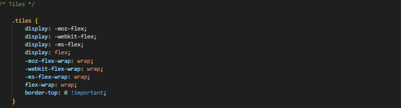
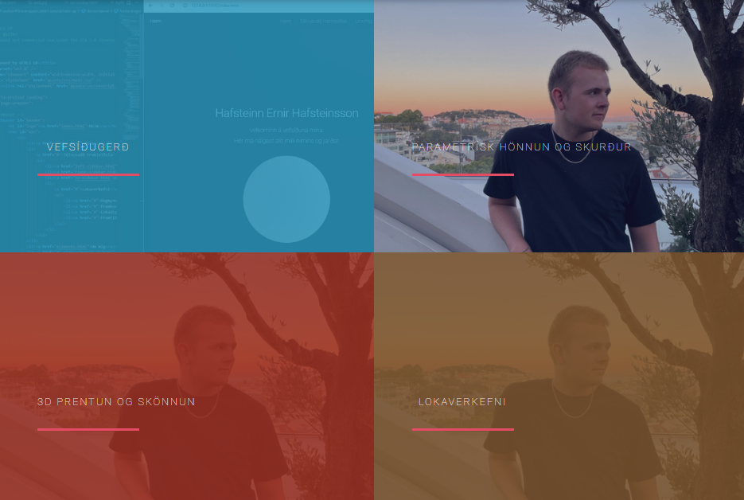
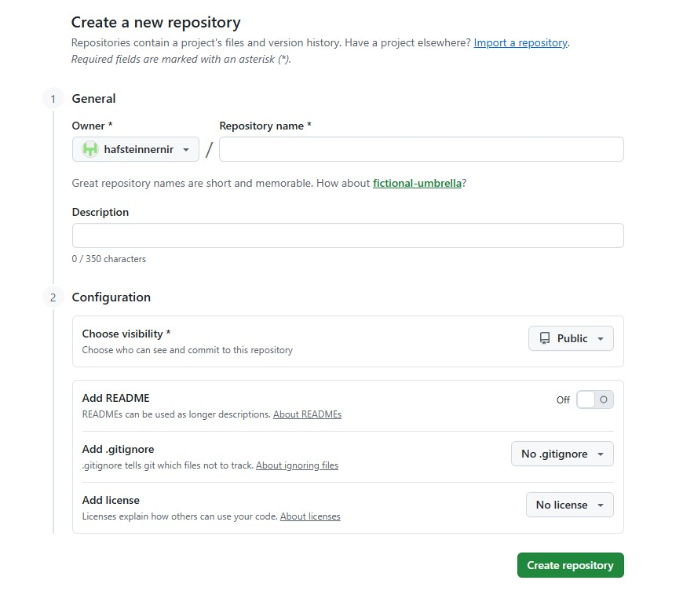
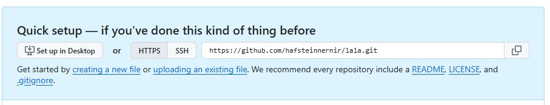
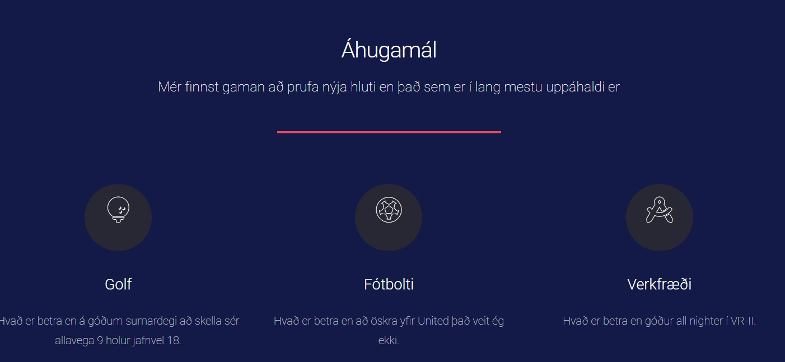

Lýsing á verkefni
Markmið verkefnisins er að hanna og þróa persónulega vefsíðu yfir vinnuframlag mitt í áfanganum Tölvustudd framleiðsla. Á Vefsíðunni verða birt verkefni sem ég vinn að yfir önnina, ásamt lýsingum, myndum og öðrum gögnum sem sýna ferlið.
Auk þess mun síðan innihalda upplýsingar um mig og ferilskránna mína.
Hönnun síðunar
Til að byrja með hafði ég litla þekkingu á því hvernig ætti að hanna vefsíðu. Hins vegar hafði ég kynnst HTML-skrám í RStudio úr áfanganum Líkindi og tölfræði.
Eftir að hafa horft á lýsinguna fyrir verkefni 1 valdi ég mér uppsetninguna Landed frá HTML5 UP. sem mér leist mjög vel á. Ég hlóð henni niður í Visual Studio Code og byrjaði að prófa mig áfram.
Þegar ég var búinn að breyta vefsíðunni eins mikið og Landed sniðmátið leyfði, fannst mér samt eitthvað vanta, sérstaklega á forsíðunni þegar kom að framsetningu verkefnanna. Þetta varð til þess að ég fór að skoða sniðmát hjá öðrum nemendum og mér fannst forsíðan hjá Agli Grétari mjög vel heppnuð og snyrtileg í uppsetningu.
Í kjölfarið fór ég inn á HTML5 UP og fann sniðmátið Forty, sem ég hlóð niður Næst tók við nákvæm og tímafrek vinna, með aðstoð ChatGPT, við að finna og sameina einungis það sem ég vildi fá.


GitHub
Til að setja vefsíðuna á netið notaðist ég við GitHub. Eftir að hafa stofnað aðgang bjó ég til nýtt repository fyrir verkefnið mitt, hafsteinn_vefsida , þar sem allar skrár síðunnar eru vistaðar og uppfærðar.

Þegar repository-ið var tilbúið valdi ég að hlaða upp tilbúnum skrám beint inn á GitHub. Ég fór inn í „Add file“ og valdi „Upload files“, þar sem ég gat dregið skrárnar úr möppunni minni yfir í vafrann.

Ég afritaði síðan allar skrárnar úr verkefnamöppunni minni yfir í repository-ið og staðfesti breytingarnar með „commit“. Að lokum virkjaði ég GitHub Pages til að gera síðuna aðgengilega á netinu. Með því varð vefsíðan opin og aðgengileg öllum, og allar framtíðaruppfærslur sem ég geri á repository-inu birtast sjálfkrafa á síðunni.
Framtíðar uppfærslur
Það eru nokkrar leiðir til að uppfæra breytingar á síðunni
Ég mun persónulega notast við Git til að uppfæra nema ef um litlar breytingar er að ræða en þá uppfæri ég beint inná Github vafranum.
Útkoman
Útkoma vefsíðunnar var betri en ég bjóst við og það kom mér á óvart hversu vel gekk að setja hana í loftið með GitHub. Ég ákvað að breyta litunum á síðunni og skipti dökkbláum bakgrunni út fyrir hvítan til að fá bjartara og hreinna útlit.
Breytingarnar gerði ég í main.css skránni. Þó ég hafi valið hvítan grunn hélt ég nokkrum litum og stílþáttum úr upprunalega sniðmátinu sem mér fannst koma vel út. Þannig varð útlitið persónulegra en hélt samt ákveðnum karakter.

Myndin sýnir dæmi um eina litasamsetningu sem mér fannst ekki passa við vefsíðuna mína.
Hvað lærði ég
Þetta verkefni hefur opnað nýjan möguleika fyrir mig, þar sem áður hafði ég hvorki búið til vefsíðu né notað GitHub. Í verkefninu lærði ég grunnatriði í uppsetningu vefsíðu, hvernig HTML og CSS vinna saman og hvernig hægt er að breyta útliti síðunnar. Ég kynntist einnig GitHub og lærði hvernig er hægt að halda utan um breytingar og birta vefsíðu á netinu.